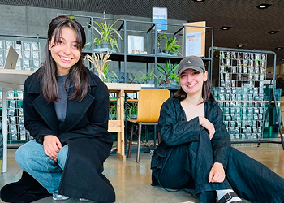

Hello,
welcome to the world of landslides
Landslides terms
1 / 42Fjeldskred (Rock avalanche)
Large and extremely fast flow of boulders in steep terrain. A landslide is actually a current, but the term is commonly used and is included here as a technical term.
About

Concept
Large and extremely fast flow of boulders in steep terrain. A landslide is actually a current, but the term is commonly used and is included here as a technical term.
Large and extremely fast flow of boulders in steep terrain. A landslide is actually a current, but the term is commonly used and is included here as a technical term.